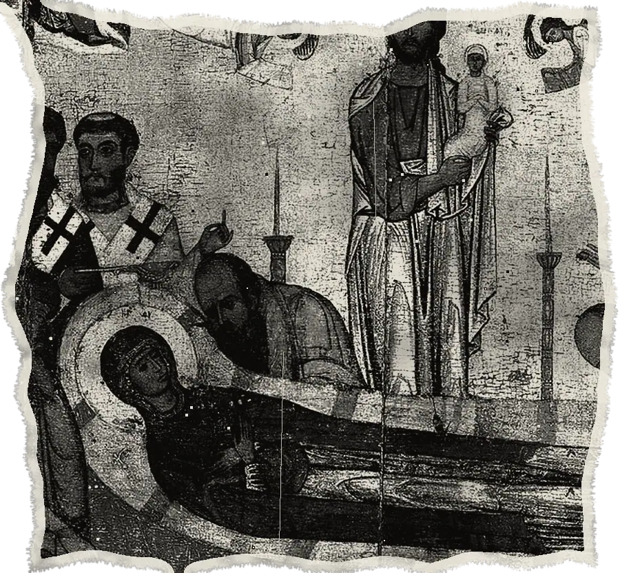
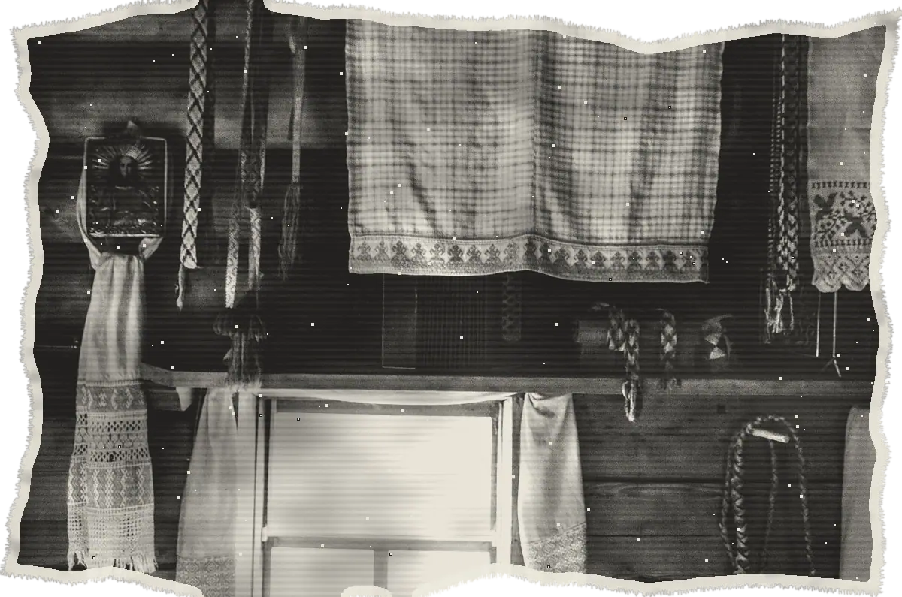
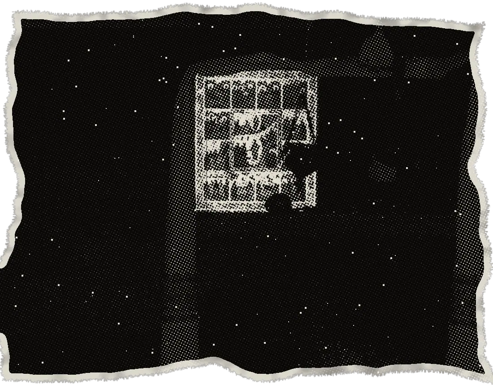

VOL. I · PLATE A · 01 / 09
THE THRESHOLD
The room, the moment, and the border that is not drawn
The ethnography of death in Russia is rarely an account of dying. It is an account of what the living do in the room afterwards — and of how quickly that room becomes a border.
Documented mainly 19th–20th centuries · European Russia; unevenly recorded · Orthodox Christian practice; local folk custom

A / 01
A room with the window open
In the accounts collected by ethnographers in Russian villages from the middle of the nineteenth century onward, death is registered less as an event than as a series of adjustments to a house. Covering mirrors and reflective surfaces (or turning them to the wall) is documented across Russian and East Slavic regions (Tolstaya 1999, pp. 321–324). Informants give two consistent reasons: preventing the 'doubling' of death (if the dead or living are reflected, death will claim another member of the household) and guarding a permeable portal between worlds, lest the wandering soul become trapped or an unquiet spirit enter. Looking into a mirror in a house where a corpse lies was strictly tabooed. Access to the room in the first hours was also regulated: pregnant women and small children were kept away so that the border would not harm unborn or fragile life, and close blood kin did not touch or wash the body (Kremleva 1999, pp. 517–519). Water that stood in the house at the moment of death was poured out and not drunk, because the dead person might have drunk it (Zelenin 1991, p. 349). The body is washed and laid on a bench, feet toward the door, men to the right of the entrance and women to the left; the table is a recent habit, chiefly Belarusian, and some Russian Old Believers lay the dead with the feet toward the icons (Zelenin 1991, pp. 347–348). At the moment of death the stove flues or a small window are opened and a piece of linen or a towel is hung out of the window; Zelenin reports three popular readings: the soul wipes itself with it, wipes its tears, or rests on it (p. 346). A stopped clock is often named, but no source read for this edition records it, so it is not asserted.
These are the practices most often repeated in the literature, and they are the ones most often flattened into a single ‘Russian custom’. The sources do not support that flattening. They record variants; they record disagreement between villages a day’s walk apart; and they record the informant’s own uncertainty about why a thing was done.
Barsov’s first volume (1872), from the Olonets North, describes the same room with differences. The dead person is laid on straw spread on the bench in the front corner, head toward the icons, with copper coins on the eyes; the house is kept quiet and is either not swept or swept toward the dead, so that others do not die (p. 303). Zelenin’s account above has the feet toward the door, so the two sources disagree on orientation and neither makes a rule. Barsov also says that a piece of linen was hung outside the window, or toward the outer front corner, for forty days after a death, and calls the custom general in Novgorod province; in Korela, when the priest was seen approaching, the window frame was taken out and a patterned towel hung there, because the dead were believed to enter a house through the window, not the door (p. 308). At Chimkinichi a pupil of his saw the frame taken out so that the dead could be carried out through the window, though the usual way out was by the door and the stairs (p. 305).


A / 02
The soul as a guest in the house
Zelenin’s synthesis for the East Slavs (1991, § 132, pp. 345–346) records a vessel of water set beside the dying person and left on the table or the windowsill for forty days. During that time the soul is thought not yet to have gone to the other world, and some say it drinks the water; others say they saw the water stir as if the soul were bathing in it. At the moment of death a cloth or towel is hung out of the window, and the people give three explanations for it (the first section). In Belarus, on the night after the autumn memorial, a towel is hung out and pancakes and kutia are put on the window for the dead (p. 346, citing the archive of the Russian Geographical Society).
Read together, these acts treat the soul as a person-like visitor who is washed, given water and a cloth, and sent on its way. The reading is Zelenin’s own summary of what people said, not a measurement of one community’s belief. The sources read for this edition do not tie the soul to breath or to bodily warmth, and the plate does not.
A / 03
Premonitions, and the problem of the motif
Signs of an approaching death (an animal’s behaviour, a knock in the house, an unusual shadow) are a standard topic in folklore handbooks, usually given as examples of a motif. No source read for this edition lists such signs or says how widely any was believed, so the plate names no examples and gives no figure. Reports of this kind are read backwards from the death, which makes them structurally unreliable.

The dead person is not yet an ancestor. For forty days he is a guest who has not been given a room.
A / 07
Forty days in one district, and a dissenting encyclopedia
One regional description gives the threshold a length. In Belozersk district, Vologda oblast, informants born between 1898 and 1935 told I. I. Razova that mirrors are covered for forty days; that coins are put on the window of the room where the body lies, then thrown into the grave to ‘buy’ the burial place; and that the door is not bolted for the whole forty days, because the dead are thought to come back until the fortieth day, sometimes as a bird at the window. A laundry beater across the doorway or rowan at the threshold keeps him out. The body is kept in the house for three days. Set beside the opened window of the first section, this is the opposite gesture: one practice lets the soul out, the other leaves the way in unbarred and then guards it. Whether these belong to one logic is the atlas’s question, not the informants’. The Great Russian Encyclopedia’s entry on East Slavic funerary rites, read only through a machine summary of the page, takes the other side of the plate’s claim about variants: it calls the rite on the whole uniform and stable, with local differences on the surface. The atlas keeps both statements, and notes that the first is a single district’s account of the 20th century, while the second is a synthesis across a much larger area.
Here the household practice meets the church norm. The liturgical manual (Novaia Skrizhal, ch. XXIII § 2) anchors the fortieth-day commemoration strictly in scriptural typology: the forty days of Moses's fast on Sinai, the forty years in the wilderness, and the Ascension of Christ on the fortieth day, establishing this span as a time of liturgical intercession before the soul's private judgment. In village life, however, the forty days were lived as an empirical physical liminality: the soul was treated as an unadmitted guest traveling between home, grave and paths it walked in life, drinking from the cup on the window and eating vapor from the food until the final send-off (provody) on the fortieth day (Kremleva 1999, pp. 528–530; Zelenin 1991, p. 346).
Text
A widow's lament for her husband (opening)
Плачъ вдовы по мужѣ (начало)
Original
English translation
Excerpt Lines 1–15 of a lament that continues for several pages. The excerpt stops before a dialect form that Barsov does not gloss.
Barsov prints this as the first lament in the collection. It opens not with the deathbed but with the sun going down behind mountains, forests, clouds and stars; the dead man's departure is described as a cosmic disappearance before it is described as a household loss. The second movement turns to the widow's children: they will wander, knock at strangers' windows, and walk a road that is not wide or trodden. The formula «победная головушка» (poor, wretched woman) is a genre marker, not a personal epithet.
Fedosova dictated her laments to Barsov in Petrozavodsk in 1867–68. Barsov notes that she dictated slowly and that he wrote down each word; the text is a transcription of a repertoire, not a recording of a funeral. The atlas prints the first fifteen lines. The following line in the printed text contains a dialect form whose sense is not certain, and the excerpt stops before it.
- победная головушка
- Formulaic self-designation: the poor, wretched woman. Not a literal reference to the head.
- горюша
- A grieving woman; a genre term for the mourner.
- стадушко
- Little flock; a collective image for the children.
- дѣтиною
- Collective form: the children, the little ones. Barsov’s own footnote on this word: used here in a collective sense.
- столыпатися
- Barsov’s own footnote on line 12 glosses it as ‘to wander in crowds’ (толпами бродить).
Source E. V. Barsov, Prichitaniya Severnogo kraia, vol. 1 (Moscow, 1872), p. 1, lines 1–15. · open source
Rights Public domain. Barsov died in 1917; the volume was published in 1872. The text is public domain in Russia (70 years p.m.a.) and in the United States (published before 1929). The transcription was checked line by line against the Internet Archive scan of the 1872 edition.
Text
On the Death of Prince Meshchersky
На смерть князя Мещерского
Original
English translation
Excerpt Lines 1–16 of an ode of 88 lines. The excerpt is the opening; the poem continues with the death of Meshchersky and the consolation of Perfilyev.
Derzhavin wrote the ode in 1779 on the death of Prince Aleksandr Ivanovich Meshchersky (1713–1779), a courtier and friend. It is not a funeral lament and was not performed at a funeral. It is a literary meditation on time, death and the vanity of rank, written for the court and the printed page.
The opening turns the sound of a clock into the voice of time and the approach of the grave. The images that follow—death as a reaper, the tomb as the leveler, the monarch and the prisoner as food for worms—belong to the eighteenth-century graveyard tradition and to Orthodox moral verse. The atlas prints the first sixteen lines; the poem continues for another seventy-two lines. It is evidence for elite literary culture, not for peasant ritual.
- глагол времён
- The word or voice of the times; an archaic, biblical phrase.
- металла звон
- The ringing of metal; most likely a clock, whose sound becomes the voice of time.
- снедь червей
- Food for worms; a traditional memento mori image.
Source G. R. Derzhavin, «На смерть князя Мещерского» (1779), lines 1–16. · open source
Rights Public domain. Derzhavin died in 1816; the ode was published in 1779. Public domain in Russia and in the United States. The text follows the Wikisource transcription based on Dukhovnye ody (1993) and was checked against the cited edition's lineation.
Apparatus sources · related plates · terms
Sources for this plate
- baiburin1993 Baiburin, Albert Kashfullovich — Ritual v traditsionnoi kul’ture (1993)
- rouhier2007 Rouhier-Willoughby, Jeanmarie — Contemporary Urban Russian Funerals: Continuity and Change (2007)
- andryunina-house Andryunina, Maria A. — Anthropomorphic Symbolism of House in Funeral and Remembrance Rites: The Body, the Soul and the Sacrifice (Ukrainian, Belorusian, Western-Russian and Polish Traditions) (n.d.)
- lewkijewskaja2004 Lewkijewskaja, Jelena (Levkievskaia, E. E.); transl. Irina Lappo — Semantyka okna w tradycyjnej kulturze Słowian Wschodnich (2004)
- skrizhal Veniamin (Krasnopevkov-Rumovskii), Archbishop — Novaia Skrizhal’ (1803 (read in a modern online edition))
- razova-belozersk Razova, I. I. — Похоронный обряд Белозерского района Вологодской области (n.d.)
- bre-eslavic-funeral Great Russian Encyclopedia (entry author not read) — Восточнославянская похоронная обрядность (n.d.)
- zelenin1927 Zelenin, Dmitry K. — Vostochnoslavianskaia etnografiia (Russian translation of Russische (Ostslavische) Volkskunde, Berlin–Leipzig 1927), transl. K. D. Tsivina (1991 (German original 1927))
- barsov1872 Barsov, Elpidifor Vasil’evich — Prichitaniia Severnogo kraia (1872–1886)
- derzhavin1779 Derzhavin, Gavriil Romanovich — Na smert’ knyazya Meshcherskogo (1779)
- tolstaya1999-zerkalo Tolstaya, Svetlana M. — Zerkalo [Mirror] (1999)
- kremleva1999 Kremleva, Irina A. — Pokhoronno-pominalnye obychai i obriady [Funeral and Memorial Customs and Rites] (1999)
- krinichnaya1997 Krinichnaya, N. A. — На росстани: мифологема судьбы в фольклорно-этнографическом освещении (1997)
URLs, access dates and limitations are in the bibliography.